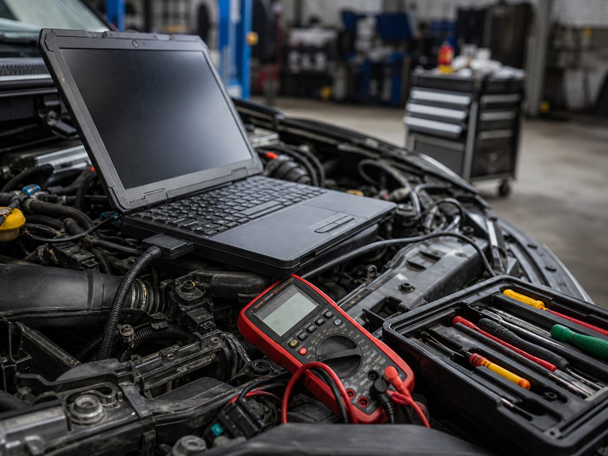
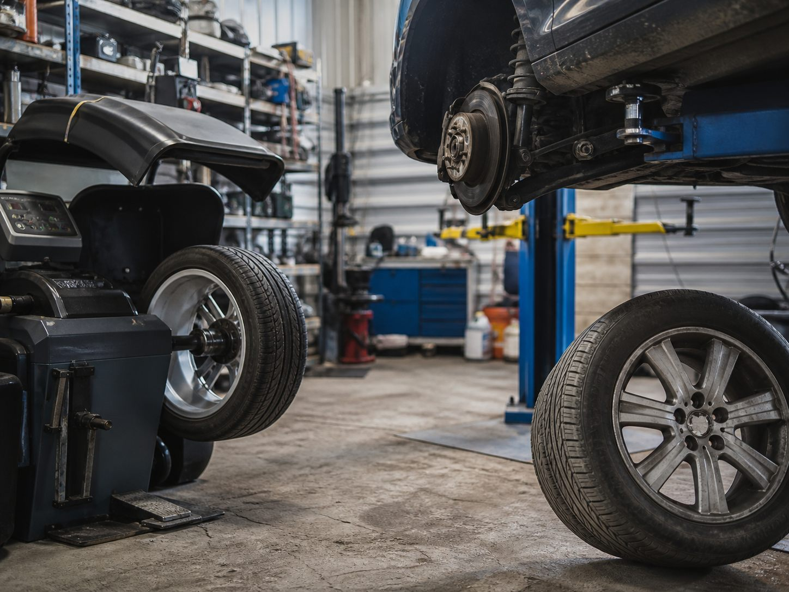

Не хотите переплатить?
Перед поездкой укажите работу, авто и симптомы. В карточке указано: ремонт коммерческого транспорта — от 1000 ₽; остальные работы лучше уточнять по объему.
Ежедневно с 09:00 до 20:00. В отзывах клиенты чаще всего отмечают быстрый ответ, оперативный ремонт, помощь с запчастями и исполнение заявленных сроков.
Перед поездкой укажите работу, авто и симптомы. В карточке указано: ремонт коммерческого транспорта — от 1000 ₽; остальные работы лучше уточнять по объему.
У сервиса рейтинг 5,0, 40 оценок и отзывы о профессиональном подходе, оперативности и работе “на совесть”.
Клиенты отмечают, что их сориентировали по времени и исполняли заявленные сроки ремонта.
Визуально по делу
В интерфейсе выделены два частых сценария: техническая диагностика и быстрые работы с колесами, подвеской и расходниками. Так проще выбрать направление и описать задачу мастеру.


Услуги без лишних формулировок
Список собран из карточки и отзывов клиентов. Если работа не указана, лучше позвонить и описать проблему.
Услуга из карточки: от 1000 ₽.
Подходит, если машине нужно вернуться в работу без долгого ожидания и лишних согласований.
Указан в карточке и подтверждается отзывами.
Переобувка, ремонт прокола, срочная помощь с колесом перед дальнейшей поездкой.
Клиенты отмечали замену масла за один визит.
Для планового обслуживания и подготовки автомобиля к сезону или дальней дороге.
В отзывах есть замена передних и задних колодок.
Когда скрипят тормоза, увеличился тормозной путь или пришло время обслуживания.
Клиенты писали о шаровых опорах, стойках и рекомендациях.
Для стуков, вибраций, люфтов и подготовки машины к спокойной эксплуатации.
В отзывах упоминали сложную проблему с двигателем.
Когда автомобиль плохо заводится, потерял тягу или требуется понятный план ремонта.
Клиенты отдельно отмечали работу специалистов.
Для ошибок, нестабильной работы систем и ситуаций, где нужна диагностика причины.
По отзывам, сервис помогает найти и привезти детали.
Полезно, когда нужно быстрее начать ремонт и не искать запчасть самостоятельно.
Прозрачность до визита
Точная цена зависит от автомобиля, детали и объема работ. Чтобы разговор был конкретным, отправьте марку, симптом, VIN при наличии и удобное время визита.
По другим работам стоимость стоит уточнить по телефону перед приездом.
Уточнить стоимостьПонятный процесс
Отзывы с Яндекс.Карт
Короткие выдержки из отзывов: скорость ответа, сроки, запчасти, цена и качество ремонта.
“Позвонили — ответили сразу, заранее попросили VIN, помогли найти нужную деталь и доставили ее. Ремонт сравнительно по нормальной цене.”
“Была проблема с двигателем, притащили почти мертвый автомобиль. Подошли с пониманием, цены приемлемые, дали машине вторую жизнь.”
“Обслуживаю 2 машины в данном сервисе, профессиональный подход мастеров, оперативный привоз запчастей.”
“За один визит переобули, поменяли масло, заменили элементы подвески и дали рекомендации.”
“Позвонила, сориентировали по времени, подъехала, сделали заплатку на пробитом колесе оперативно.”
“Все отлично, качественно и на совесть. Главное — исполняют заявленные сроки ремонта.”
Коротко перед звонком
Лучше сначала позвонить. В отзывах клиенты писали, что при свободном месте их принимали оперативно, но график лучше уточнить перед поездкой.
Можно получить ориентир. Точная сумма зависит от автомобиля, запчасти и объема работ, поэтому полезно заранее назвать VIN, симптом и желаемую услугу.
Да. В карточке указана услуга “ремонт коммерческого транспорта” с ориентиром от 1000 ₽.
Имя, телефон, марку автомобиля, симптом, срочность и удобное время. Если есть VIN, добавьте его в поле с автомобилем или комментарием.
Контакты
Московская область, городской округ Домодедово, деревня Шишкино, Петровская улица, 52. Открыто каждый день с 09:00 до 20:00.